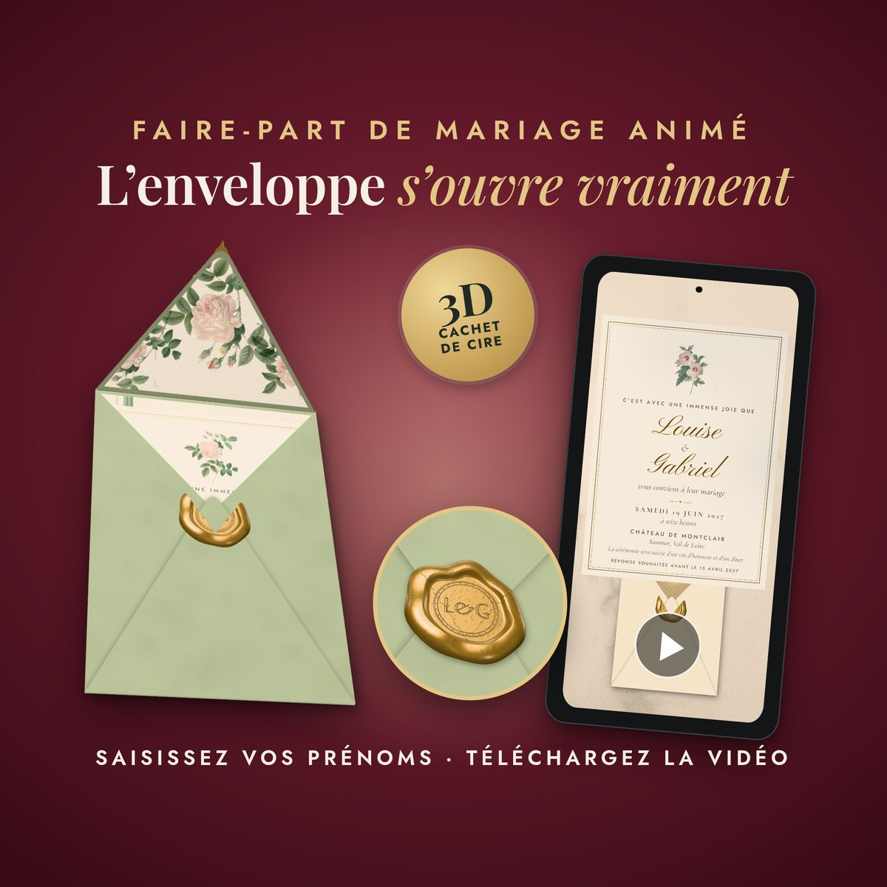
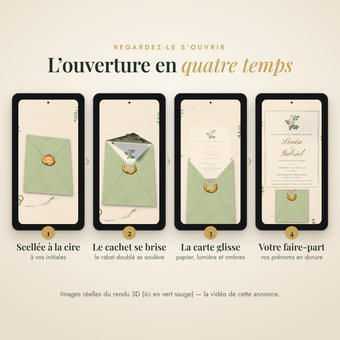
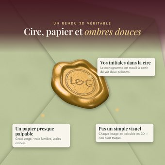
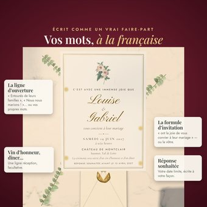
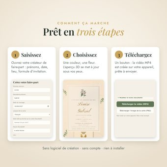
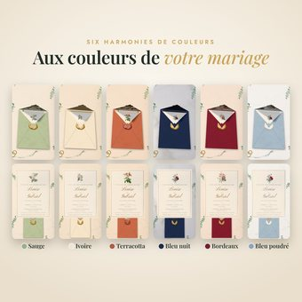
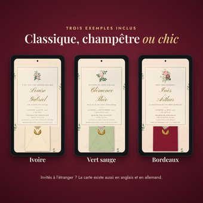
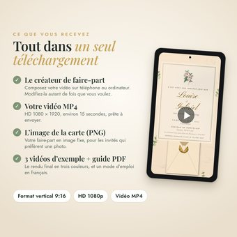
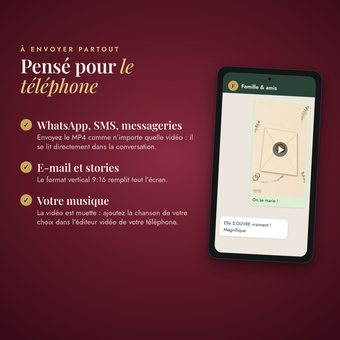
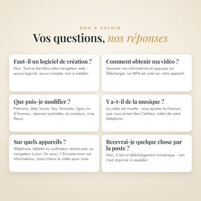

← all 20 listings · Animated Wedding Invitations










▶ video
Faire-part de mariage animé en vidéo : enveloppe 3D ivoire qui s’ouvre, cachet de cire doré à vos initiales et téléphone affichant le faire-part de Louise et Gabriel, sur fond bordeaux.
TheCoolShopCo
Faire-part mariage animé en vidéo, enveloppe 3D qui s’ouvre avec cachet de cire, faire-part mariage digital à personnaliser et à envoyer
$19.99
Digital download — 6 file(s) · Designed by TheCoolShopCo
Try the invitation maker (live) ↗Buy it nowAdd to basket
Files you get
- Guide « Commencez ici » (2 pages, French): open the maker, make the video, send it; help route (Commencez-ici-Faire-part-anime.pdf)
- Offline copy of the faire-part maker (one self-contained HTML file, French UI + LISEZ-MOI). Opens in a browser on a computer. (createur-faire-part-anime.zip)
- Sample video, French wording, Ivory & Champagne — Louise & Gabriel (1080x1920, 15 s) (exemple-faire-part-ivoire-champagne.mp4)
- Sample video, French wording, Sage — Clémence & Théo (1080x1920, 15 s) (exemple-faire-part-vert-sauge.mp4)
- Sample video, French wording, Burgundy — Inès & Arthur (1080x1920, 15 s) (exemple-faire-part-bordeaux.mp4)
- The faire-part maker itself — host this file (any static host), put its URL in _kit/wedding/kit.config.json ("w08"), rebuild the PDF. Not uploaded to Etsy as-is. (index.html)
Un faire-part de mariage animé, en vidéo, que vos invités regarderont deux fois : une vraie enveloppe en 3D, fermée par un cachet de cire à vos initiales. Le cachet se brise, le rabat doublé se soulève et votre faire-part glisse hors de l’enveloppe jusqu’à l’écran.
Ce faire-part mariage digital est rédigé comme un vrai faire-part français — « ont la joie de vous convier à leur mariage », vin d’honneur, réponse souhaitée — et chaque image est un véritable rendu 3D : grain du papier, lumière, ombres douces, prénoms en dorure.
CE QUE VOUS RECEVEZ
• Votre créateur de faire-part : une page web privée (et sa copie hors ligne dans un fichier ZIP) où vous saisissez vos informations et téléchargez votre vidéo
• Votre vidéo MP4 personnalisée : format vertical 9:16, HD 1080 × 1920, environ 15 secondes, sans filigrane
• L’image de votre carte (PNG), pour les invités qui préfèrent une photo
• 3 vidéos d’exemple terminées, en français : ivoire & champagne, vert sauge, bordeaux
• Le guide « Commencez ici » (PDF, en français)
LES PLUS
• Enveloppe, cachet de cire, doublure et carte en vraie 3D, avec de vraies ombres
• Vos initiales moulées dans la cire, automatiquement, à partir de vos deux prénoms
• Tous les textes se modifient : prénoms, date, heure, lieu, ville, réponse souhaitée
• Les formules aussi : la ligne au-dessus des prénoms (« Entourés de leurs familles », « Nous nous marions ! »…), la phrase d’invitation et la ligne réception (vin d’honneur, dîner, soirée dansante)
• La date s’écrit toute seule en toutes lettres : « Samedi 19 juin 2027 »
• 6 harmonies de couleurs : ivoire & champagne, vert sauge, terracotta, bleu nuit, bordeaux, bleu poudré
• 5 fleurs botaniques anciennes, ou un monogramme sans fleur
• Carte disponible aussi en anglais et en allemand, pour vos invités à l’étranger
• Autant de versions que vous le souhaitez : une pour la famille, une pour les amis, une pour le dîner seulement
• Aucun logiciel de création, aucun compte à ouvrir, rien à installer
COMMENT ÇA MARCHE (3 ÉTAPES)
1. Ouvrez votre créateur de faire-part depuis le guide « Commencez ici ».
2. Saisissez vos prénoms, la date et le lieu, choisissez une couleur et une fleur : l’aperçu 3D se met à jour sous vos yeux.
3. Appuyez sur « Télécharger la vidéo ». Le MP4 est créé sur votre propre appareil ; il ne vous reste qu’à l’envoyer.
COMPATIBILITÉ
• Pour créer la vidéo : un téléphone, une tablette ou un ordinateur récent, avec un navigateur à jour (Chrome ou Edge recommandés)
• Pour l’envoyer : la vidéo MP4 se lit sur tous les téléphones et s’envoie par WhatsApp, SMS, messagerie, e-mail ou en story
• Vous préférez qu’on s’en occupe ? Envoyez-nous vos informations par message Etsy : nous créons votre vidéo et vous l’envoyons sous 24 heures.
QUESTIONS FRÉQUENTES
Y a-t-il de la musique ? — La vidéo est muette. Vous pouvez ainsi ajouter la chanson de votre choix dans l’éditeur vidéo de votre téléphone avant l’envoi.
Puis-je écrire mon propre texte ? — Oui, chaque ligne de la carte se modifie. Les lignes sont courtes (une ligne chacune) : c’est un faire-part, pas une lettre.
Puis-je changer la mise en page, la police ou ajouter une photo ? — Non. La mise en page et les polices font partie du modèle. Vous choisissez les mots, les couleurs et la fleur.
Peut-on l’imprimer ? — Ce modèle est un faire-part vidéo. L’image PNG fournie est prévue pour les écrans.
Mes informations sont-elles envoyées quelque part ? — Non. La vidéo est fabriquée dans votre navigateur ; vos prénoms et vos informations ne quittent pas votre appareil.
Combien de temps dure la vidéo ? — Environ 15 secondes : 8 secondes d’ouverture, puis le faire-part reste à l’écran le temps de le lire (vos invités peuvent aussi mettre en pause).
LIVRAISON
Téléchargement numérique immédiat : rien n’est expédié par la poste. Après le paiement, vos fichiers sont disponibles dans « Achats et avis » sur Etsy (et par e-mail) : le guide PDF, le créateur de faire-part (ZIP) et les vidéos d’exemple. Les couleurs peuvent varier légèrement d’un écran à l’autre. Les fichiers étant livrés immédiatement, les articles numériques ne sont pas repris ; mais si quelque chose ne fonctionne pas chez vous, écrivez-nous, nous trouverons une solution.
Conçu par TheCoolShopCo. Certains éléments graphiques ont été créés à l’aide d’outils d’IA puis finalisés à la main.
Tags (13)
Title 136/140 chars · main keyword: faire part mariage · materials: Vidéo MP4, Éditeur dans le navigateur, PNG, PDF
EN translation (shown to en shoppers)
French Wedding Invitation Video, Faire-Part Mariage, Animated 3D Envelope Opening with Wax Seal, Editable Digital Invite in French
An animated French wedding invitation (faire-part de mariage) on video: a real 3D envelope sealed with your initials in wax. The seal snaps, the lined flap lifts and your invitation slides out and rises to the screen.
The card is worded the way a French faire-part is really written — "ont la joie de vous convier à leur mariage", vin d'honneur line, "Réponse souhaitée avant le…" — and every frame is a true 3D render.
WHAT YOU GET
• Your invitation maker — a private web page (plus an offline copy in a ZIP) where you type your details and download your video
• Your own MP4 video: vertical 9:16, HD 1080 × 1920, about 15 seconds, no watermark
• A matching picture of your card (PNG)
• 3 finished sample videos in French: ivory & champagne, sage green, burgundy
• A Start Here guide (PDF, in French)
FEATURES
• Real 3D envelope, wax seal, liner and card with real lighting and shadows
• Your initials in the wax, made automatically from your two first names
• Every line can be changed: names, date, time, venue, town, reply-by line, the line above the names, the invitation sentence and the reception line
• The date is written out for you in French ("Samedi 19 juin 2027")
• 6 colourways, 5 vintage botanical flowers (or a clean monogram)
• The card also comes in English and German for guests abroad — the maker's menus follow the language you pick
• No design app, no account, nothing to install
HOW IT WORKS (3 STEPS)
1. Open your invitation maker from the Start Here guide.
2. Type your names, date and venue, pick a colour and a flower and watch the 3D preview update.
3. Press "Télécharger la vidéo" (Download video). The MP4 is made on your own device, ready to send.
WORKS WITH
• A recent phone, tablet or computer with an up-to-date web browser (Chrome or Edge recommended)
• The finished MP4 plays on every phone and can be sent by WhatsApp, text, messaging apps, email or posted as a story
• Rather not do it yourself? Send us your details in an Etsy message and we will make the video for you within 24 hours.
FAQ
Is there music? — The video is silent, so you can add any song in your phone's video editor.
Can I change the layout, fonts or add a photo? — No. You change the words, the colours and the flower; the layout is part of the design.
Is my information uploaded anywhere? — No. The video is made inside your own browser.
DELIVERY
Instant digital download. Nothing is shipped. After payment your files are in Purchases and reviews on Etsy. Colours can look slightly different from screen to screen. If anything does not work for you, message us and we will put it right.
Designed by TheCoolShopCo. Some design elements were created with the help of AI tools and finished by hand.
DE translation (shown to German shoppers)
Französische Hochzeitseinladung als Video, Faire-part Mariage, 3D-Umschlag öffnet sich mit Wachssiegel, digitale Einladung auf Französisch
Eine animierte französische Hochzeitseinladung (Faire-part de mariage) als Video: ein echter 3D-Umschlag, versiegelt mit euren Initialen im Wachs. Das Siegel bricht, die gefütterte Klappe hebt sich und eure Einladung gleitet heraus bis vor die Kamera.
Die Karte ist so formuliert, wie man in Frankreich wirklich einlädt — „ont la joie de vous convier à leur mariage“, Zeile zum Vin d’honneur, „Réponse souhaitée avant le …“ — und jedes Bild ist ein echtes 3D-Rendering.
DAS BEKOMMT IHR
• Euren Einladungs-Editor — eine private Webseite (plus Offline-Kopie als ZIP), auf der ihr eure Daten eintippt und euer Video herunterladet
• Euer eigenes MP4-Video: Hochformat 9:16, HD 1080 × 1920, ca. 15 Sekunden, ohne Wasserzeichen
• Das passende Bild eurer Karte (PNG)
• 3 fertige Beispielvideos auf Französisch: Elfenbein & Champagner, Salbeigrün, Bordeaux
• Die Anleitung „Commencez ici“ (PDF, auf Französisch)
DETAILS
• Umschlag, Wachssiegel, Futter und Karte in echtem 3D mit echtem Licht und Schatten
• Eure Initialen im Siegel — automatisch aus euren Vornamen
• Jede Zeile lässt sich ändern: Namen, Datum, Uhrzeit, Ort, Rückmeldefrist, die Zeile über den Namen, der Einladungssatz und die Zeile zur Feier
• Das Datum wird auf Französisch ausgeschrieben („Samedi 19 juin 2027“)
• 6 Farbwelten, 5 historische botanische Blumen (oder ein schlichtes Monogramm)
• Die Karte gibt es auch auf Deutsch und Englisch — die Menüs des Editors folgen der gewählten Sprache
• Kein Designprogramm, kein Konto, keine Installation
SO GEHT’S (3 SCHRITTE)
1. Öffnet euren Einladungs-Editor über die Anleitung.
2. Namen, Datum und Ort eintippen, Farbe und Blume wählen — die 3D-Vorschau passt sich sofort an.
3. Auf „Télécharger la vidéo“ (Video herunterladen) tippen. Das MP4 entsteht direkt auf eurem Gerät.
FUNKTIONIERT MIT
• Aktuellem Handy, Tablet oder Computer mit aktuellem Browser (Chrome oder Edge empfohlen)
• Das fertige MP4 läuft auf jedem Handy und lässt sich per WhatsApp, Nachricht, E-Mail oder als Story verschicken
• Lieber machen lassen? Schickt uns eure Daten per Etsy-Nachricht — wir erstellen das Video innerhalb von 24 Stunden.
HÄUFIGE FRAGEN
Gibt es Musik? — Das Video ist ohne Ton, damit ihr euer Lied im Video-Editor eures Handys hinzufügen könnt.
Kann ich Layout oder Schrift ändern oder ein Foto einfügen? — Nein. Ihr ändert Texte, Farben und Blume; das Layout gehört zum Design.
Werden meine Daten hochgeladen? — Nein. Das Video entsteht in eurem Browser.
LIEFERUNG
Sofortiger digitaler Download. Es wird nichts verschickt. Nach der Zahlung findet ihr eure Dateien in euren Etsy-Käufen. Farben können je nach Bildschirm leicht abweichen. Etwas klappt nicht? Schreibt uns — wir finden eine Lösung.
Gestaltet von TheCoolShopCo. Einige Designelemente wurden mithilfe von KI-Tools erstellt und von Hand fertiggestellt.
Honest verdict (round 1): 8/10
8Thumbnail
8Gallery
7Product
8Title+tags+text
9In search grid
French-first listing built from the same real 3D envelope (bordeaux, 'L'enveloppe s'ouvre vraiment'). All text French, EUR-friendly. Only bordeaux tile in the faire-part grid, which is mostly pastel paper cards.
Still holding it back: Invitation maker not hosted or phone-tested yet; French copy not proofread by a native speaker; hero image is ivory-on-ivory and loses contrast at 300 px; shop language is English so it must post with English as the main language and French as the translation.
In Etsy search for “faire part mariage” (625 results) — can you spot ours?
Ours is placed at position 3 among the real top results (sort = relevance).

Faire-part mariage modifiable, 3 styles champêtre, élégant, bohème, carte réponse, vin d'honneur, PDF
5.99 CAD
Etsy result #1

Faire Part Mariage | Invitation Canva Editable | Modèle Floral Élégant | Carte à Imprimer | Mariage Moderne | Téléchargement Instantané
2.00 USD
Etsy result #2
Faire-part mariage animé en vidéo, enveloppe 3D qui s’ouvre avec cachet de cire, faire-part mariage digital à personnaliser et à envoyer
$19.99
TheCoolShopCo · Digital download

Faire-part Mariage Vert Sauge | Save the Date RSVP Menu | Template Canva Modifiable
8.50 EUR
Etsy result #3

Faire-part mariage bleu marine et or, invitation WhatsApp, papeterie 5x7, panneaux mariage, modèle Canva
14.99 EUR
Etsy result #4

Faire Part Mariage, Editable Wedding Invitation Template, Forest Green & Gold Floral Marriage Invite, Printable 5x7, Instant Download
3.98 USD
Etsy result #5

Faire Part Mariage Muslim Wedding Invite Islamic Pink Floral Wedding Invitation Video Custom Animated Nikah Invite Arab Nikkah Invitation
23.00 GBP
Etsy result #6

Faire Part Mariage | Suite Invitation Mariage 10 Pièces | Modifiable Canva Français | RSVP Menu Marque Place | Champêtre Chic | À Imprimer
2.50 USD
Etsy result #7

Faire Part Mariage, Editable Wedding Invitation Template, Elegant Floral Marriage Invite, Printable Wedding Card, Instant Download
8.00 USD
Etsy result #8

Faire-part mariage bleu poussiéreux modifiable Canva, invitation mariage, RSVP et détails, bilingue, à imprimer
26.00 CAD
Etsy result #9

Faire Part Mariage, Editable French Wedding Invitation Template, Baroque Parchment, Wax Seal, Faire-part Digital, Instant Download
2.99 USD
Etsy result #10

Faire Part Mariage Marron Invitation Digital, Site Web Save The Date Cadeau Mariage Model Canva Monogramme, Carte Invite Dentelle Originale
17.99 EUR
Etsy result #11